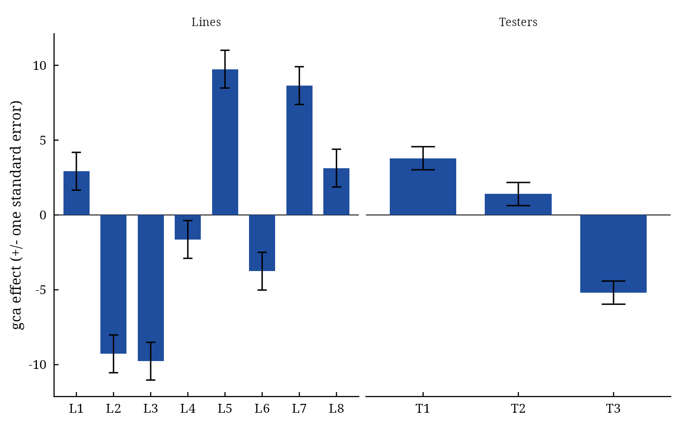

LineTester() carries out Kempthorne's (1957) line \(\times\) tester analysis of the crosses of
\(L\) lines with \(T\) testers in a randomized complete block experiment: the analysis of variance with
the split of the crosses into lines, testers and lines \(\times\) testers, the proportional contributions of
the three to the crosses' sum of squares, the general and specific combining ability effects with standard errors,
and the genetic variances.
Arguments
- y
response: a column of
datagiven by name (y = Yieldory = "Yield") or a numeric vector of lengthnrow(data).- Rep
replicate (block): a column of
dataor a vector, as fory.- Line
line (female) of each plot: a column of
dataor a vector, as fory.- Tester
tester (male) of each plot: a column of
dataor a vector, as fory.- data
a data frame (or
data.table) with one row per plot.- Inbreeding
inbreeding coefficient \(F\) of the lines and testers, in \([0, 1]\) (default
0;1for inbred lines).
Value
An object of class c("da_linetester", "da_result", "list"):
Means\(L \times T\) matrix of cross means.
ANOVAanalysis of variance (class
anova):Rep,Crosses,Lines,Testers,Lines:Testers,Error.Contributionproportional contributions (percent) of lines, testers and lines \(\times\) testers.
GCA.Lines,GCA.Testersgca effects (named vectors).
SCA\(L \times T\) matrix of sca effects.
StdErrstandard errors:
gca_line,gca_tester,sca,gi_gj_line,gi_gj_tester,sij_skl.Genetic.Componentsdata frame: \(\sigma^2_{gca}\) of lines, of testers and pooled, \(\sigma^2_{sca}\), \(\sigma^2_A\), \(\sigma^2_D\), their ratio and the degree of dominance.
Methods: print(), summary(), plot() (which = c("gca", "sca", "contribution", "biplot",
"residuals", "qq")), data.table::as.data.table(x, component =), da_export.
Details
With \(B\) replicates, cross means \(\bar{y}_{ij}\), line means \(\bar{y}_{i\cdot}\), tester means \(\bar{y}_{\cdot j}\) and grand mean \(\bar{y}_{\cdot\cdot}\): $$\hat{g}_i = \bar{y}_{i\cdot} - \bar{y}_{\cdot\cdot}, \quad \hat{g}_j = \bar{y}_{\cdot j} - \bar{y}_{\cdot\cdot}, \quad \hat{s}_{ij} = \bar{y}_{ij} - \bar{y}_{i\cdot} - \bar{y}_{\cdot j} + \bar{y}_{\cdot\cdot},$$ with standard errors \(\sqrt{MS_E/(BT)}\) (lines), \(\sqrt{MS_E/(BL)}\) (testers) and \(\sqrt{MS_E/B}\) (crosses); a difference of two effects has \(\sqrt{2}\) times these. The sums of squares are on the plot scale; the proportional contribution of lines is \(100 SS_L/SS_C\), and likewise for testers and lines \(\times\) testers.
Genetic variances. From the expected mean squares \(E(MS_L) = \sigma^2 + B\sigma^2_s + BT\sigma^2_{gL}\), \(E(MS_T) = \sigma^2 + B\sigma^2_s + BL\sigma^2_{gT}\) and \(E(MS_{LT}) = \sigma^2 + B\sigma^2_s\): $$\hat{\sigma}^2_{gca} = \frac{L + T - 2}{B(2LT - L - T)}\left[\frac{(L - 1)MS_L + (T - 1)MS_T}{L + T - 2} - MS_{LT}\right], \qquad \hat{\sigma}^2_{sca} = \frac{MS_{LT} - MS_E}{B},$$ and with inbreeding coefficient \(F\) of the parents \(\sigma^2_A = 4\sigma^2_{gca}/(1 + F)\) and \(\sigma^2_D = 4\sigma^2_{sca}/(1 + F)^2\) (Singh and Chaudhary 2004). The degree of dominance is \(\sqrt{2\sigma^2_D/\sigma^2_A}\).
Missing plots are handled as in Griffing: least-squares cross means adjusted for blocks and the
harmonic mean of the plot numbers as \(B\); every cross must have at least one plot.
References
Kempthorne, O. (1957). An Introduction to Genetic Statistics. John Wiley and Sons, New York.
Singh, R. K. and Chaudhary, B. D. (2004). Biometrical Methods in Quantitative Genetic Analysis. Kalyani Publishers, New Delhi.
See also
NCDesign, PartialDiallel, LineTesterData
Other DiallelAnalysisR analyses:
GardnerEberhart(),
Griffing(),
GriffingEnv(),
GriffingMeans(),
Hayman(),
Heterosis(),
NCDesign(),
PartialDiallel()
Author
Muhammad Yaseen (myaseen208@gmail.com)
Examples
lt <-
LineTester(
y = Yield
, Rep = Rep
, Line = Line
, Tester = Tester
, data = LineTesterData
, Inbreeding = 1
)
lt
#> Line x tester analysis: 8 lines, 3 testers, 3 replicates
#>
#> Df Sum Sq Mean Sq F value Pr(>F)
#> Rep 2 427 213.3 14.894 1.03e-05 ***
#> Crosses 23 5469 237.8 16.607 2.76e-15 ***
#> Lines 7 3476 496.6 34.685 2.70e-16 ***
#> Testers 2 1038 519.0 36.244 3.54e-10 ***
#> Lines:Testers 14 955 68.2 4.762 2.76e-05 ***
#> Error 46 659 14.3
#> ---
#> Signif. codes: 0 ‘***’ 0.001 ‘**’ 0.01 ‘*’ 0.05 ‘.’ 0.1 ‘ ’ 1
#>
#> Proportional contributions (%)
#> Lines Testers Lines:Testers
#> 63.57 18.98 17.45
#>
#> Genetic components
#> Components
#> gca_lines 47.6060
#> gca_testers 18.7824
#> gca 35.1418
#> sca 17.9554
#> gca/sca 1.9572
#> Additive 70.2835
#> Dominance 17.9554
#> Dominance/Additive 0.2555
#> Degree of dominance 0.7148
lt$Contribution
#> Lines Testers Lines:Testers
#> 63.56706 18.97840 17.45454
plot(x = lt, which = c("gca", "sca", "contribution", "biplot", "residuals", "qq")[1])
